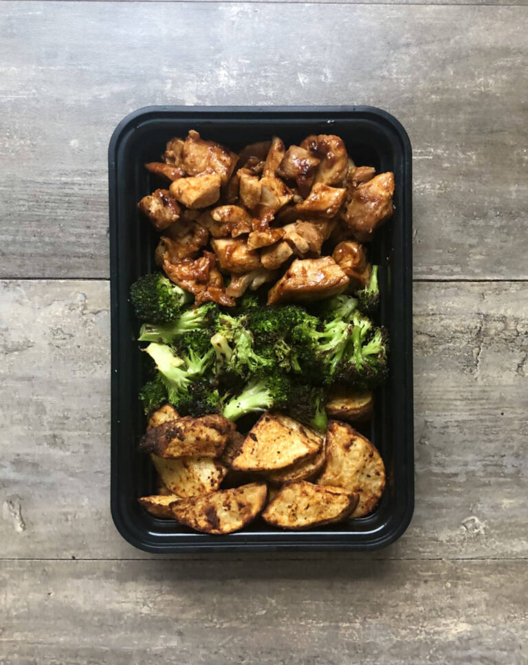

Honey BBQ Chicken

Honey BBQ Chicken thighs that are baked and broiled to create some awesome Maillard browning. Serve with a side of roasted seasoned broccoli and cajun seasoned potato wedges. Takes 50 minutes to make and makes five servings.
Ingredients
For the Broccoli
- 1½ lbs (680 g) broccoli
- 2 tbsp (30 g) oil
- salt and pepper
For the Potatoes
- 5 small (750 g) russet potatoes
- 1 tbsp (15 g) oil
- 2 tsp (6 g) garlic powder
- 2 tsp (6 g) paprika
- 1 tsp (8 g) chili powder
- salt and pepper to taste
For the Chicken
- 2½ lbs (1135 g) boneless skinless chicken thighs
- ½ cup (120 g) BBQ sauce
- 2 tbsp (42 g) honey
- salt and pepper to taste
Instructions
For the Broccoli
- Preheat your oven to 425° F.
- Wash and cut your broccoli into florets. I buy the precut stuff to make it easier and faster.
- Toss the broccoli in 2 tbsp of oil and salt and pepper to taste.
- Spread the broccoli out on a sheet pan and roast for 8-10 minutes then remove from the oven and turn. Roast another 5-8 minutes or until the broccoli has nice color to it.
For the Potatoes
- Wash and cut your potatoes into small wedges.
- Toss the potatoes in a bowl with 1 tbsp of oil and the chili powder, garlic powder, paprika, salt and pepper.
- For the air fryer, air fry the potatoes at 400°F for 10-12 minutes, shaking the basket half way through. You will likely have to do two batches to prevent overcrowding.
- For the oven, spread the potatoes out on a sheet pan and roast at 425°F for about 15 minutes, flipping about 10 minutes in. If you cook them at the same time as the broccoli it may require more time to get brown due to the amount of moisture in the oven.
For the Chicken
- Mix together the BBQ sauce and the honey. Reserve about ¼ of the mixture.
- Lightly season the chicken with salt and pepper and coat with ¾ of the BBQ sauce mixture.
- Place on a sheet pan and bake at 425°F for 12 minutes.
- Remove the chicken from the oven and cut into 1" pieces. Turn your oven to broil.
- Add the chicken back to the pan and cover with the remaining BBQ sauce.
- Add the chicken to the top rack of your oven and broil for about 5 minutes or until it has developed good browning throughout. Watch it closely as it will be prone to burn. Check on the chicken every minute or so and stir when needed.
Plating
- This recipe makes 5 servings. Divide your ingredients evenly 5 ways.
Nutrition
Calories: 360kcal | Carbohydrates: 49g | Protein: 23g | Fat: 8g